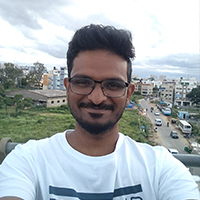

Hi, I'm Thomas.
Techie, dog lover, traveller.
Infosys, Bengaluru via TrustCircle , Hyderabad. Alumnus of MG University and Jawahar Navodaya Vidyalaya.
Always eager for the next book, new music, expanding my horizons, and finding places to travel to.
Seeking a space to learn, envision and innovative ideas with a working environment that challenges me to work harder and get better every day.
Reach me on Twitter @tpk_in